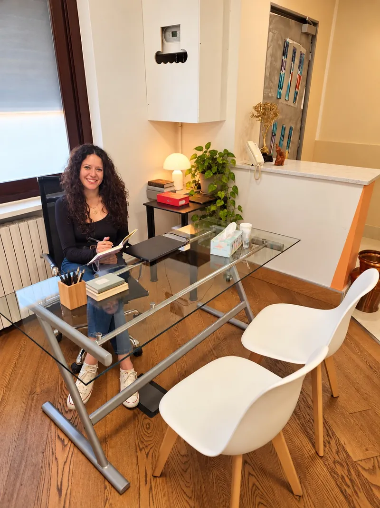
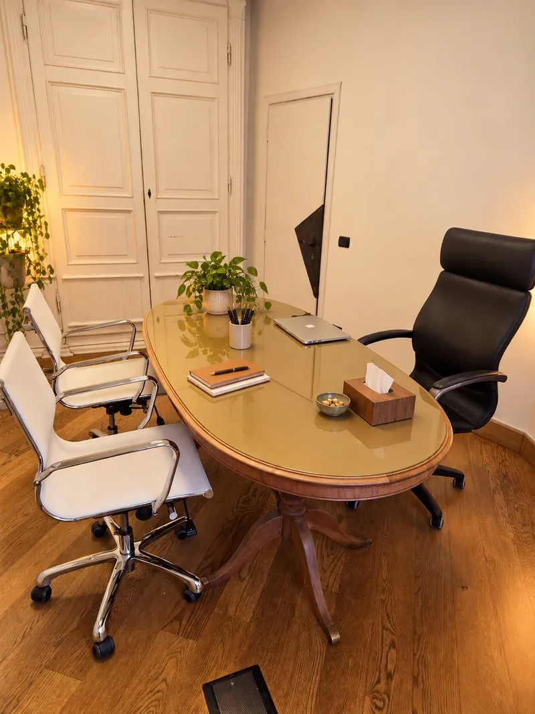

In presenza
Un incontro nel nostro studio a Roncello, in un contesto riservato.
Lo studio
Riceviamo in presenza a Roncello e online, secondo la modalità disponibile con la professionista scelta, in uno spazio pensato per fermarsi, raccontarsi e iniziare un percorso con i propri tempi.


Le professioniste
Siamo due psicologhe indipendenti: condividiamo lo studio, uno sguardo sistemico-relazionale e momenti di confronto e riflessione professionale, sempre nel rispetto della riservatezza e della privacy delle persone che seguiamo.
I nostri percorsi formativi approfondiscono aspetti diversi: Silvia, la dimensione transculturale, le appartenenze e i diversi modi di vivere le esperienze; Valentina, i significati che costruiamo nelle relazioni e la loro influenza sulla nostra esperienza.

Dott.ssa Valentina Allieri
Psicologa, specializzanda in psicoterapia sistemico-relazionale. Riceve bambini, adolescenti, adulti, coppie, genitori e famiglie.
Scopri il profilo →
Dott.ssa Silvia Pagliari
Psicologa clinica, specializzanda in psicoterapia sistemico-relazionale. Riceve adolescenti, adulti e coppie.
Scopri il profilo →Dove riceviamo
Lo studio si trova in Via Giacomo Matteotti 11, Roncello (20877). È raggiungibile a piedi in circa due minuti dalla fermata di Via del Guadagno, servita dalle linee Z313 e Z321, e dista circa dieci minuti in auto dal Centro Commerciale Globo.
Richiedi un primo colloquio →Un incontro nel nostro studio a Roncello, in un contesto riservato.
La modalità online può essere concordata nel rispetto della privacy.
I colloqui individuali durano 60 minuti, gli incontri di coppia 90 minuti e quelli familiari almeno 90 minuti.